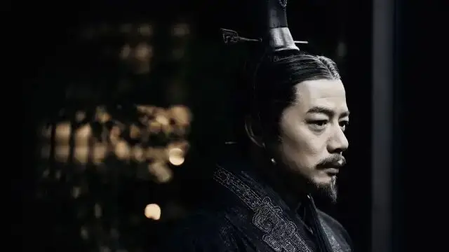
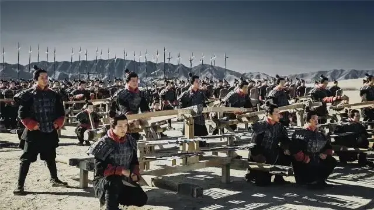
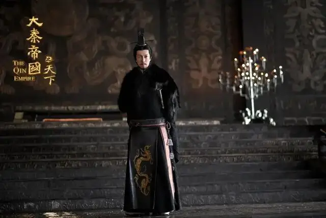
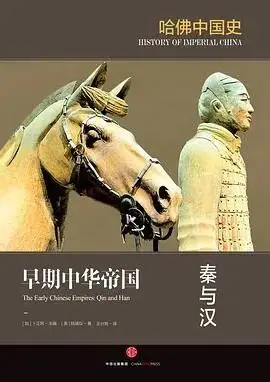
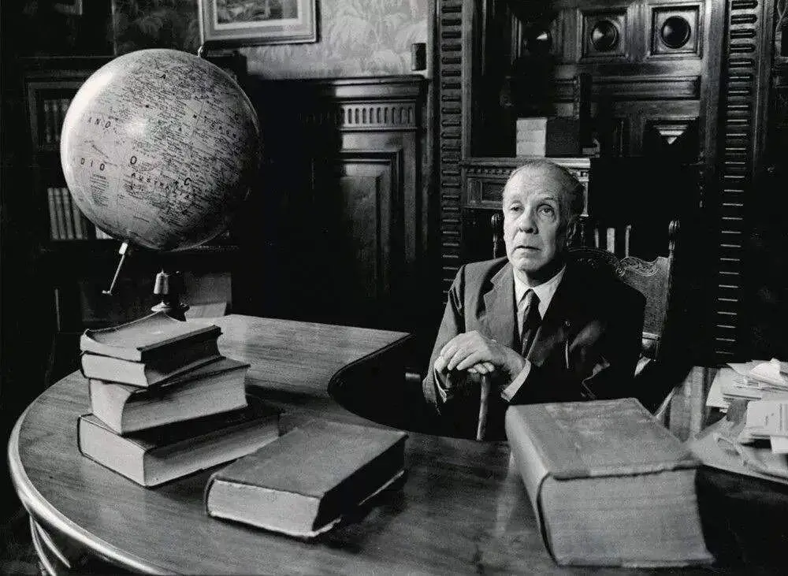
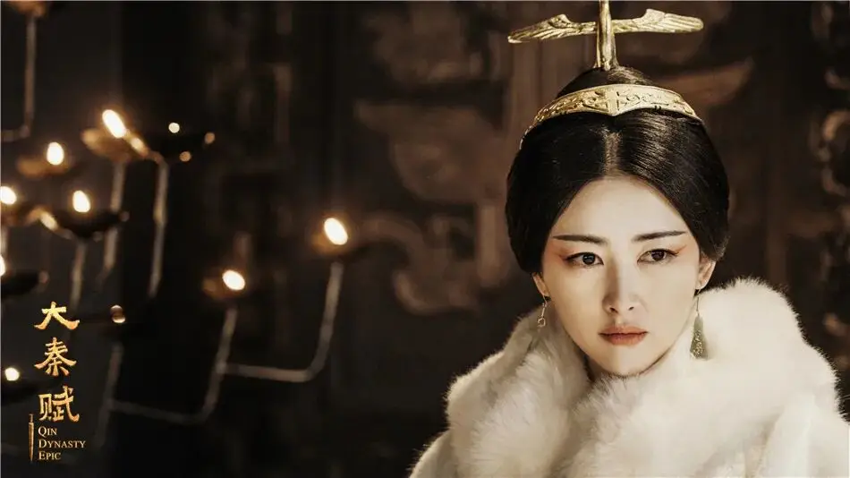
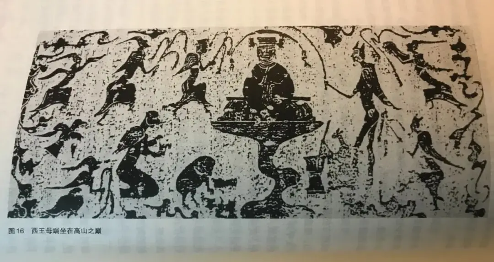
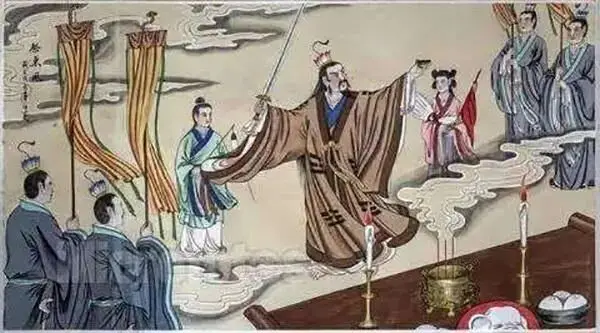

id="js_content" style="">

作者：献刀
正文共计3000字左右
预计阅读时间5min
衡量一部历史剧，我认为有两个标准。
一是有没有足够的历史考究。
二是能不能唤醒观众对过去历史的想象。
这都需要创作人员努力站在他者的脉络中去理解他者。

当前，备受争议的《大秦赋》再次将大秦历史搬上屏幕。
围绕那段我们自以为很熟悉的历史，今天我们为大家盘点五个不为大众所知的视角。
有了这些补充，我们不仅会对几千年前的他者有更多的了解，也借着这样的视角可以对今天多几分观照。
-01-
秦始皇其实是个超级背锅侠
嬴政在很多人印象里，凶狠、残暴、变态，是和商纣王、隋炀帝一样的暴君。
暴秦的徭役和酷法是出了名的，但就影响深远的焚书坑儒这件事，其实某种意义上，是秦始皇给楚汉背了锅。

在卜正民主编的《哈佛中国史》里提到：
“秦的文化政策被称为焚书，但这实际上更是一种统一的政策而不是一种破坏。”
秦始皇并没有焚书，而是“下令没收了《诗经》、《尚书》以及私人撰述的哲学著作，将之藏在皇家图书机构，只供那些国家指定的学者进行学习研究使用。”

至于坑儒，“汉朝文献认为秦朝极其敌视学者，尤其敌视建立在儒家传统之上的那种古典学派，然而事实并非如此。”
事实是：“秦始皇向儒生们咨询关于封禅祭祀方面的仪式，而且他的刻石也大量引用了典故，全部由《诗经》中的韵律写成。”
那么对先秦那些“古典学派”们真正造成杀伤的是谁？
其实是项羽，以及刘邦所创立的汉朝。
“最终的灾难发生在公元前206年，当项羽军队攻入咸阳、劫掠秦宫时，把秦朝的皇家藏书付之一炬，夷为平地。”
而汉朝施行的“罢黜百家独尊儒术”，“并非是对秦代文化传统的一种反动，而仅仅是一种更为狭隘的表现。”
看似更文明更先进的汉朝，在文化管制上比暴秦更狠，对先秦文化的打击和消灭有过之而无不及。
秦始皇给后世留下的坏印象，也多半来源于汉朝的宣传策略——汉朝统治者和文人故意抹黑秦始皇。
为什么要抹黑？
秦在很多方面为后世中国帝王家建立了经典的“帝国运作方式”模板（真正的功业和锅其实在这儿），而这些大部分都被汉朝继承了下来。
但汉朝“需要与第一个王朝的崩溃划清界限”，所以“一方面吸取了秦的做法，另一方面又在批判它”。
这就很矛盾。
“为了解决这个矛盾，汉朝放弃了对秦国制度的批判，而采取了对秦始皇本人的丑化。”
结果是：“它树立了一种道德化的外观，即人们所称为的中国政治文化的虚伪性。”
换句话说，就是当了婊子立牌坊，从此以后，中国政治文化就开始“外儒内法”那一套了。
-02-
外国作家也对秦始皇充满幻想
博尔赫斯跟我们一样，也是汉朝恶意宣传工作的受害者，他认为秦始皇在焚书坑儒的事情上做得很绝。
而跟我们不一样的是，作为一名作家，博尔赫斯对此事作了很多浪漫有趣的想象。

例如，在《长城和书》（收入《探讨别集》）中，他认为嬴政焚书是为了抹去人们对过去的记忆，这样他就可以在时间上成为真正的始皇帝。
而在空间上，秦始皇修筑长城，除了为了抵御外敌，也可能是想把帝国围起来——就像你想用围墙把自己家小花园围起来一样。
然后博尔赫斯将这种时间和空间上设限，与秦始皇对长生不老的追求联系在了一起：“这些资料表明，空间范畴的长城和时间范畴的焚书是旨在阻挡死亡的有魔力的屏障。巴鲁赫-斯宾诺莎说过，一切事物都希望永远存在；这位皇帝和他的方士们也许认为长生不死是内在的本质，外邪进不了一个封闭的世界。”
除此之外，博尔赫斯也谈到了秦始皇焚书的另一个可能的目的：“始皇帝曾逐出淫乱的生母，正统的人认为他这种严厉的处置是不敬；始皇帝之所以要废止整个过去，也许是为了抹掉一个回忆：他母亲的丑行。（一个犹太国王也有类似情况，为了要杀一个小孩子，他杀尽了所有的孩子。）”

博尔赫斯能够从淫乱的赵姬联想到两百多年后的希律王，而现在的国产剧编剧却只会不断拿嫪毐做文章，让人感叹。
-03-
车同轨书同文不是免费的午餐
小时候学历史，读到秦朝让中国实现了“车同轨书同文”，对此事不甚了了，觉得似乎不是什么了不得的事情。
不过《哈佛中国史》给出的一个对比，也许会更新我们的认知：
“统一字体、文法、度量衡、币制、法律在今天看来是最正常不过的，但在公元前3世纪，需要在想象和实现之间完成一个变革的逾越。在欧洲，这种变革是2000多年后，直到法国大革命才出现。”
所以，当时由于古代交通和技术不发达，中央要实现对地方的控制和改变成本极其高，操作难度也大。
因此，秦朝是否实现了真正的车同轨、书同文，恐怕是一个问号，但毋庸置疑的是，当时秦朝是花了很大的功夫去做这件事。
而秦朝这么做的目的，主要还是为了方便统治，并且“给人们传达这样一种信息：必须服从统治者和他的政府。”
这种思考同样可以带到今天：我们的社会不断出现更多统一的、便利的事物的同时，它们也都在暗示我们必须服从提供和维护便利的人。
天下没有免费的午餐，我们是否真的清楚自己为获取某种便利而付出了怎样的代价？
-04-
商鞅是个狠人
秦国之所以能够迅速崛起，最终吞并六国，一个重要的原因是重用法家人物商鞅进行变法。
而法家是政治思想家里比较低级也比较变态的那种。
在普鲁塔克的《希腊罗马名人传》里，即便是崇尚武力缺少仁爱精神的斯巴达，其创始者也怀着某种崇高的精神。
但中国的法家没有这种精神，他们是最最现实功利的人。
商鞅推崇农战思想，他认为老百姓就应该知道两件事：耕田和打仗。
除此之外，“其他所有人类价值观或者活动都对国家秩序构成威胁。”
当时的法家思想，尤其是商鞅，是通过赏罚分明的制度建设，来打造一个令行禁止、行动效率非常高的国家。
因此他的思想其实更接近一种军事思维。
所以法家思想和现代法治在内涵上不可混为一谈。
-05-
早期中国人心目中的神仙，都有一对小翅膀
关于秦汉时期的宗教信仰，《哈佛中国史》提到：“烧制的陶质树上带有双翼的仙人们栖息在树的枝干上，而人类的形象则位于底座上。”
随后书中给出了插图。

图中除了坐在正中央的西王母，几乎所有神仙肩背上都看得出有一对小小的翅膀。
在我的印象里，随着佛、道两教的兴盛，中国后世的文艺作品里，除了雷震子以外，带翅膀的仙人其实很少见。
可能是因为道教对于神仙的体质特征和修炼方式，给出了更系统化和抽象化的解释，因此神仙飞升最终需要的是一口真气，而不需要翅膀了。
反倒是秦汉乃至先秦的图画，与西方艺术家心有灵犀，都给天使背上安插一对小翅膀。
在今天的历史剧里，毫无疑问古人的宗教信仰和精神世界是被相对弱化的一项。
而这种弱化阻碍了我们真正理解古人。
举个例子：《三国演义》原著除了讲述政治、军事、仁义、诡计等之外，同样也含有大量占卜、巫术、灵异事件等“迷信糟粕”内容。
例如后汉衰落之际，出现了种种不吉利的征兆，一条大黑蛇忽然从宫殿横梁上坠下，惊吓了临朝的皇帝，京城里公鸡变成母鸡，母鸡变成公鸡，种种不祥征兆，搞得大家人心惶惶。
再如诸葛亮等人频繁观察星象来预判吉凶，这不仅仅是为了表现谋士们的智慧，背后还有中国古人对时间与空间的理解方式。
而书中提到的诸如“气数”、“天命”等，在今人看来也许只是实施政治行动所必须的托词，但在古人那里，是非常严肃的、十分基础的世界观。

七星坛诸葛祭风
如果缺少了这些内容，我们对古人的内心也就完全无法共情。
对于那些慷慨忠义之士，读者虽然流下眼泪，但有多少是出于对他们内心情感的真正理解，又有多少只是一厢情愿的幻想和自我投射呢？
而如果将古人的精神世界更加细致完整地展现出来，观众或读者的想象空间也将倍数扩充。
从这里就可以看出今天国产影视作品最大的问题所在：
很多人批评时下国产影视作品三观不正或演员演技太烂。但在我看来这都不是最要害的地方，真正致命之处是作品所展现出的精神和想象空间太过匮乏。
不过很多观众并不在乎什么想象空间，他们要的，只是一个可以让大脑暂停运作的休闲产品，一个方便进行自我情感投射的工具。
于是，任何一部“作品”，最终都逃不开向观众献媚了。
这里没有挑逗你眼目情欲的小鲜肉
也没有挑动你肉体情欲的段子
更没有膨胀你今生骄傲的鸡血
我们只在乎那些最质朴真诚的作品
在那里我们才能恢复真正的想象力
我们也坚信这才是我们真正需要的

ID:Six_hundred_hits
长按二维码，一键关注
【六百击】
电影评论
尽情分享朋友圈

微信二维码打赏通道